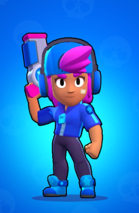

Shelly is one of The Wanderers, and is the POV of the majority of Ready to Brawl. She is an ex-bandita turned wanderer, and roams Brawltopia with her friends.
Shelly fires a burst of shotgun pellets that deal low damage by themselves, but can deal a lot together. The attack deals more damage at close range since more pellets will hit the enemy, but the range of her attack is quite long, making her able to charge her Super from afar without risking elimination. This attack allows Shelly to excel in close-quarters combat, especially against Brawlers with low health and/or shorter-ranged attacks